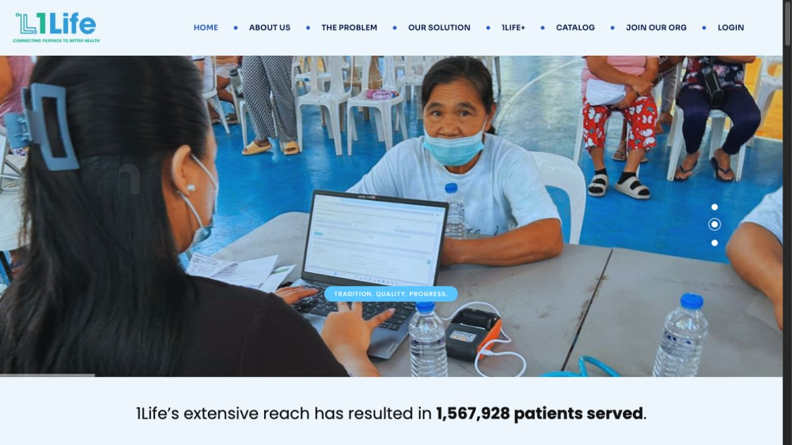

06 / DATA & HEALTH
1Life Platform
Better data. Better preparedness.

The project
A health tracking and analytics platform with predictive medical inventory modeling to support medical mission planning.
My contribution
- Build Python and Jupyter analytics to identify disease hotspots and forecast sickness-related outages.
- Develop inventory models that summarize medical demand by area.
- Build secure health-data APIs using C# and FastEndpoints for frontend and analytics integrations.
Outcome & context
Predictive medical inventory modeling.